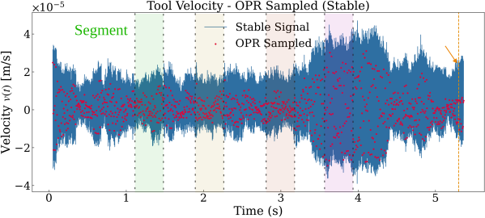
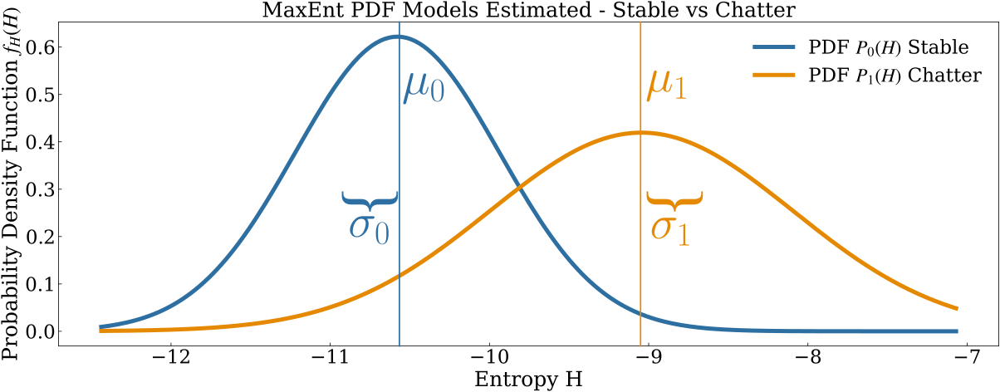

← OPR Sampling Sequential Probability Ratio Test →
Maximum Entropy (MaxEnt) Modelling¶
This page explains the Maximum Entropy principle and how the library uses it to build a probability model for the vibration signal.
1. Intuition: What Does Entropy Measure?¶
Shannon entropy measures the unpredictability (or spread) of a random variable.
For a continuous probability density \(p(x)\) the differential entropy is:
In plain terms:
- A signal concentrated around one value → low entropy (predictable, stable).
- A signal spread over many values → high entropy (unpredictable, energetic).
When chatter sets in, the vibration amplitude grows and its distribution widens — entropy increases.
This entropy increase is the feature that MaxEnt-SPRT tracks.
2. The Maximum Entropy Principle¶
"Among all probability distributions that are consistent with the observed data (e.g. known mean and variance), choose the one with the maximum entropy — it is the least biased." — E. T. Jaynes, 1957
Why does this matter?¶
We want to fit a probability model \(P_0(H)\) (stable signal entropy) and \(P_1(H)\) (chatter entropy) from a finite number of observations. Instead of assuming an arbitrary shape, we impose only what we know:
| Known constraint | Result |
|---|---|
| Mean \(\mu\) and variance \(\sigma^2\) | MaxEnt distribution = Gaussian \(\mathcal{N}(\mu, \sigma^2)\) |
| Only mean \(\mu\) (and \(x \geq 0\)) | MaxEnt distribution = Exponential |
| No constraints | MaxEnt distribution = Uniform |
Since we estimate \(\mu\) and \(\sigma^2\) from the signal segments, the Gaussian is the MaxEnt choice — no arbitrary assumptions beyond what the data tells us.
3. From Signal Segments to Entropy Values¶
The pipeline computes one entropy value per signal segment as follows:
Step 1 — OPR downsampling.
The raw signal (sampled at \(f_s \approx 20\,\text{kHz}\)) is downsampled to one sample per revolution (OPR):
Step 2 — Segmentation.
Consecutive groups of \(N_\text{seg}\) OPR samples form one segment.
Each segment spans exactly \(N_\text{seg}\) revolutions = \(N_\text{seg}/f_r\) seconds Figure 1.

Figure 1. Example of segmentation of velocity-based OPR samples into non-overlapping segments..
Step 3 — Entropy estimation.
The library fits a Gaussian \(\mathcal{N}(\hat\mu, \hat\sigma^2)\) to the segment values and computes the Gaussian MaxEnt entropy:
This reduces the segment to a single scalar \(H_n\) that quantifies its "spread" Figure 2.

Figure 2. Gaussian distribution fitted to segment values for Maximum Entropy (MaxEnt) estimation.
¶
4. Training the MaxEnt Models \(P_0\) and \(P_1\)¶
The detector is trained offline on two labelled portions of the signal:
| Portion | Time window | Label |
|---|---|---|
| Stable (chatter-free) | \([t_\text{start},\ t_\text{stable}]\) | \(H_0\): no chatter |
| Chatter | \([t_\text{stable},\ t_\text{end}]\) | \(H_1\): chatter |
For each portion:
- Compute \(H_n\) sequence (one value per segment).
- Estimate \(\mu_0, \sigma_0\) (stable) and \(\mu_1, \sigma_1\) (chatter).
- Define the MaxEnt PDFs Figure 3:

Figure 3. Offline training of the detector showing the separation between MaxEnt distributions of stable and chatter conditions.
After training, \(\mu_1 > \mu_0\) (chatter has higher mean entropy) and the two Gaussians are clearly separated.
5. In Code¶
from MaxEnt_SPRT import MaxEntSPRTDetector, MaxEntSPRTConfig, GaussianMaxEntEstimator
cfg = MaxEntSPRTConfig(alpha=0.05, beta=0.05, reset_on_H0=True)
detector = MaxEntSPRTDetector(
config=cfg,
estimator=GaussianMaxEntEstimator() # Computes H_n = 0.5*ln(2πe σ²)
)
# Offline training from raw signals
detector.fit_offline_from_signals(
y_free=stable_signal, t_free=t_stable,
y_chat=chatter_signal, t_chat=t_chatter,
rpm=12_000, ratio_sampling=50.0, N_seg=2,
)
# Inspect the fitted models
print(detector.models.p0) # GaussianPDF(mu=μ₀, sigma=σ₀)
print(detector.models.p1) # GaussianPDF(mu=μâ‚, sigma=σâ‚)
6. Why Gaussian MaxEnt and Not Histogram?¶
- Histogram entropy requires enough data to fill all bins reliably — a problem with short segments.
- Gaussian MaxEnt needs only 2 parameters (\(\mu, \sigma\)) which can be estimated even from very short segments.
- It is analytically tractable: the log-likelihood ratio (LLR) between two Gaussians has a closed form (see SPRT).
Class in the library
The class GaussianMaxEntEstimator (in lib/entropy.py) computes exactly this formula.
An alternative EmpiricalHistogramEntropyEstimator is also available if you have long segments.
Summary¶
| Concept | Symbol | Role |
|---|---|---|
| Shannon entropy of a segment | \(H_n\) | Feature extracted per segment |
| Stable MaxEnt model | \(P_0(H) = \mathcal{N}(\mu_0,\sigma_0^2)\) | Null hypothesis distribution |
| Chatter MaxEnt model | \(P_1(H) = \mathcal{N}(\mu_1,\sigma_1^2)\) | Alternative hypothesis distribution |
| Constraint driving Gaussian choice | Known \(\mu\) and \(\sigma^2\) | Least-biased MaxEnt solution |